filename = "../data/example_image_ch00.tif"
model_path = "../data/example_model"
radius_um = 5.0NEST
NEST – Nuclear Extraction and Segmentation Tool
Below you’ll find everything you need to get started with NEST, from installing the package to running a complete segmentation pipeline on your own images. The typical workflow involves:
- Loading and visualizing your raw image
- Correcting illumination artifacts using CLAHE
- Dividing the image into overlapping tiles
- Segmenting nuclei with a pre‐trained CellPose model
- Stitching the tile‐level masks back into a full‐image segmentation
- Expanding nuclear labels to approximate cell boundaries
- Overlaying outlines and exporting results
Installation
Install latest from the GitHub repository:
$ pip install git+https://github.com/plezar/NEST.gitDocumentation
Documentation can be found hosted on this GitHub repository’s pages.
How to use
The core inputs required to run NEST are:
Input Image
A grayscale microscopy image (TIFF or similar) containing the nuclei you wish to segment.CellPose Model
Path to a pre-trained CellPose model.Expansion Radius (µm)
The distance (in micrometers) by which to expand the nuclear masks to approximate whole-cell boundaries.
Given these inputs, NEST will:
- Load and enhance the image for uniform illumination.
- Split the image into overlapping tiles.
- Run segmentation on each tile.
- Stitch tile masks into a global mask.
- Optionally expand masks to full-cell labels.
Example Workflow for Fluorescence Microscopy Images
Reading the Input Image
We provide a sample image in the data folder. This image was acquired using a Leica Stellaris Dive system by stitching multiple 1024×1024 fields of view:
image = cv2.imread(filename, cv2.IMREAD_UNCHANGED)
plt.imshow(image, cmap='grey')
plt.axis('off')
plt.show()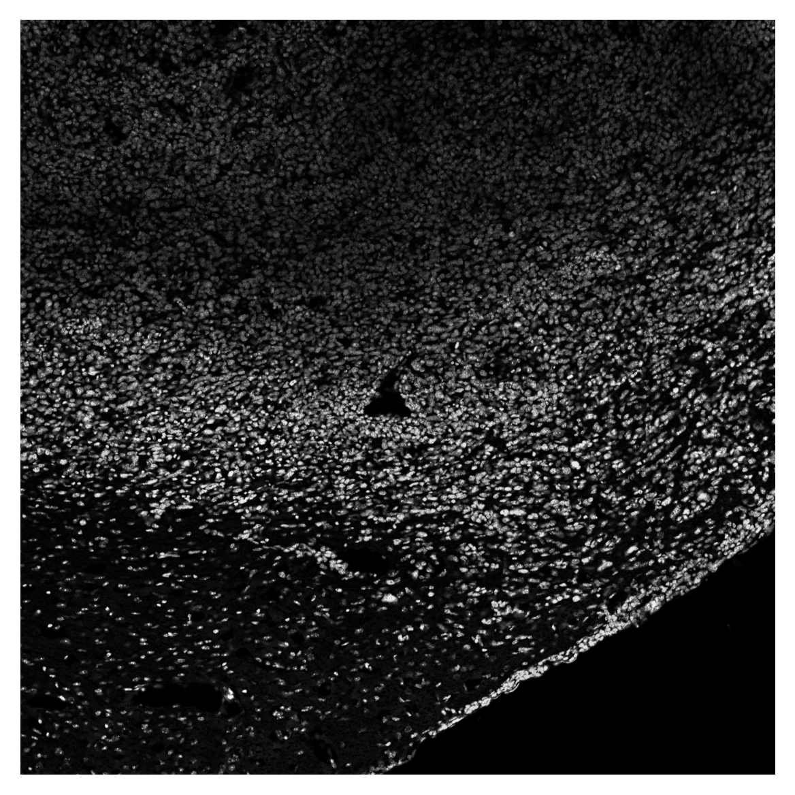
Flat-Field Correction with CLAHE
Microscopy images often suffer from uneven illumination due to optical and sample variations. NEST uses Contrast Limited Adaptive Histogram Equalization (CLAHE) to address this:
- Local Processing: The image is divided into small tiles (matching the stitching grid).
- Histogram Equalization: Each tile’s brightness distribution is equalized independently.
- Contrast Limiting: A
clip_limitprevents over-enhancement of noise. - Seamless Merging: Tiles are blended back together to produce a smoothly corrected image.
image_enh = clahe(image, clip_limit = 3, tile_grid_size = count(image, t = 1024, v = 0.1))fig, (ax1, ax2) = plt.subplots(1, 2, figsize=(8, 4))
ax1.imshow(image, cmap='grey')
ax1.set_title('Original image')
ax1.axis('off')
ax2.imshow(image_enh, cmap='grey')
ax2.set_title('CLAHE')
ax2.axis('off')
plt.tight_layout()
plt.show()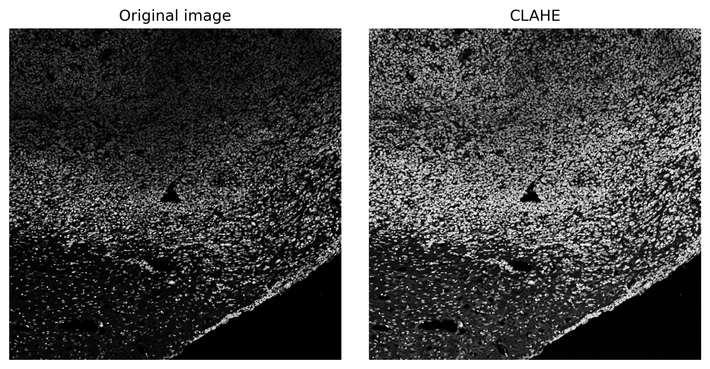
Notice that local brightness gradients are flattened while preserving fine nuclear details.
Tiling the Enhanced Image
To maintain segmentation accuracy at the edges of each tile, NEST splits the enhanced image into 128×128 pixel tiles with a 20-pixel overlap. This overlap captures nuclei that span tile borders, reducing artifacts. Larger overlap improves accuracy but increases computational load.
tiles, x, y = split(image_enh, tile_size = (128, 128), overlap = 20)
print(tiles.shape)(361, 128, 128)Segmentation
This example demonstrates nuclear segmentation, but the same workflow in principle can be applied to any segmentation task (membrane or cytoplasmic).
mask = predict(img_list = tiles,
use_gpu = True,
model_path = model_path,
cellpose_param=(0.32, 0.08))
np.save('../cache/mask.npy', mask)Using custom Cellpose model from ../data/example_model for segmentation.no seeds found in get_masks_torch - no masks found.mask = np.load('../cache/mask.npy')fig, axes = plt.subplots(1, 4, figsize=(16,4))
titles = ['Tile 1', 'Tile 2', 'Tile 3', 'Tile 4']
for ax, m, img, title in zip(axes, mask[:4], tiles[:4], titles):
overlay = plot_outlines(m, img)
ax.imshow(overlay)
ax.axis('off')
ax.set_title(title)
plt.tight_layout()
plt.show()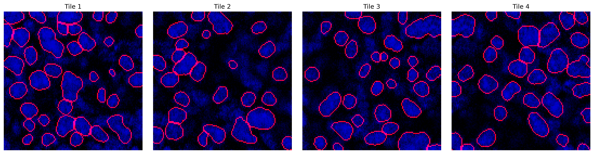
Stitching
global_mask = stitch(mask, x, y, 0.2)nuclei_overlay = plot_outlines(global_mask, image_enh, save_path="../data/nuclei_overlay.tif")
plt.imshow(nuclei_overlay)
plt.axis('off')
plt.show()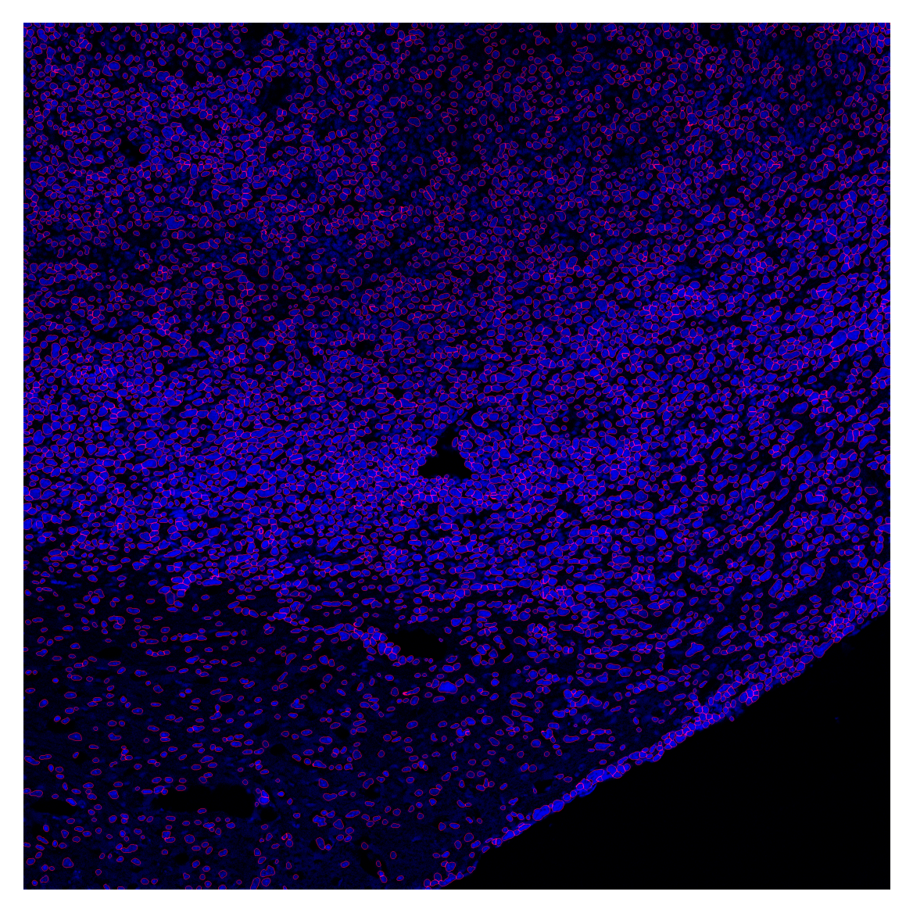
Nuclear expansion
ps = get_physical_size(filename, verbose=True)
cell_labels = expand_with_cap(
global_mask,
spacing=ps,
fixed_expand=5,
max_area_ratio=5
)Pixel size = 0.540 × 0.540 µm/px
Physical size = 1069.3 × 1069.3 µmcell_overlay = plot_outlines(cell_labels, image_enh, save_path="../data/cell_overlay.tif")
plt.imshow(cell_overlay)
plt.axis('off')
plt.show()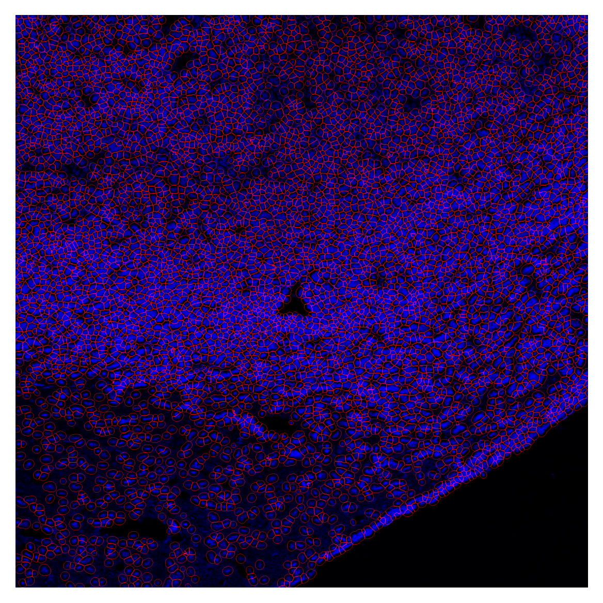
plot_label_mask can be used to visualize the final segmentation mask when cells have been assigned unique labels. Here we assign random labels to each cell for visualization purposes.
rng = np.random.RandomState(45)
labels = np.unique(global_mask)
labels = labels[labels != 0]
type_names = [f"type_{i+1}" for i in range(50)]
# build the map: each label → a random choice from type_names
cell_type_map = {
lbl: rng.choice(type_names)
for lbl in labels
}
plot_label_mask(mask=cell_labels,
nuclear_mask=global_mask,
cell_type_map=cell_type_map,
seed=100,
save_path='../data/mask_overlay.tif')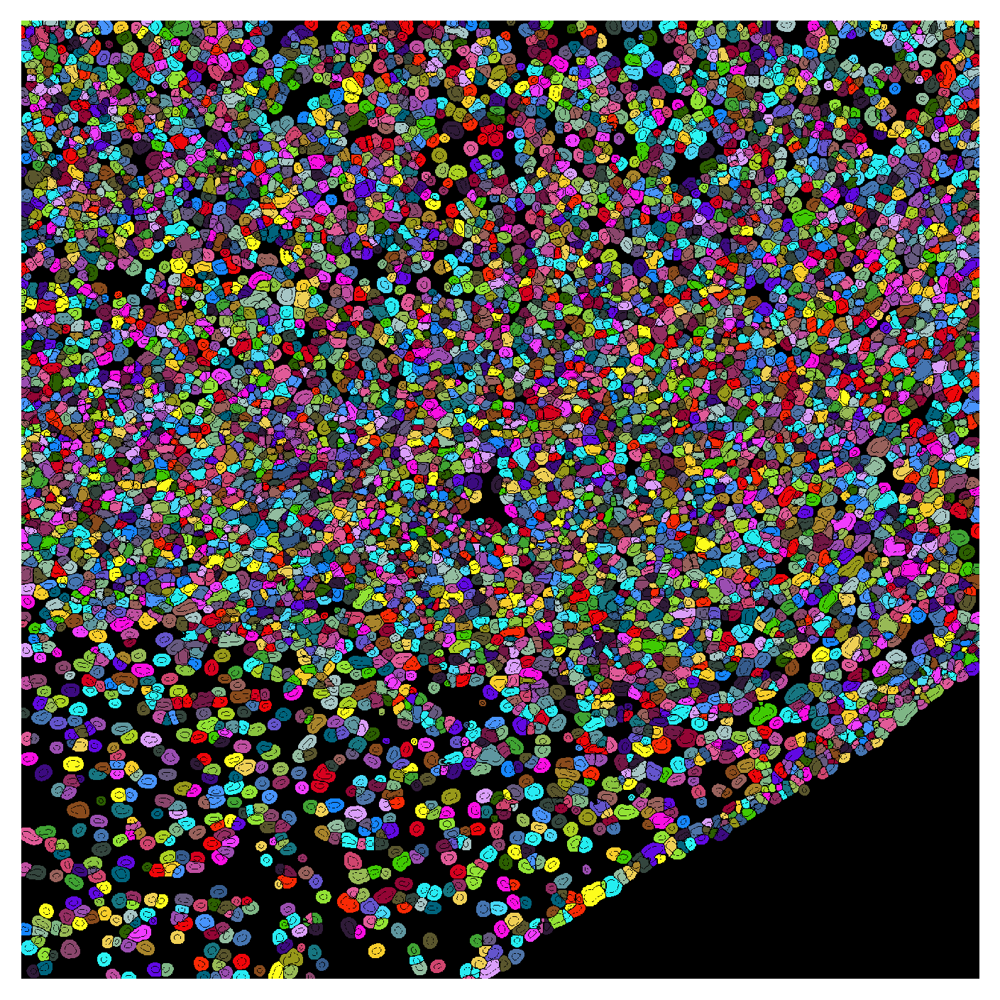
plot_channel_mask can be used to show signal intensity for one or more channels overlaid with the segmentation mask. Here we show the GFP and DAPI channels (nuclear stain) overlaid with the segmentation mask. When only one channel is provided, the channel is shown as a heatmap. If multiple channels are provided, the channels are shown as RGB composites.
gfp_image = cv2.imread("../data/example_image_ch01.tif", cv2.IMREAD_UNCHANGED)
plot_channel_mask(mask=cell_labels,
channel1=gfp_image,
nuclear_mask=global_mask)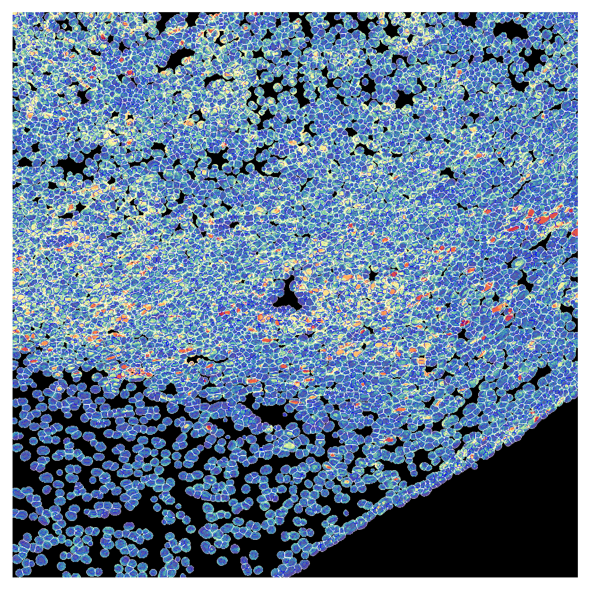
plot_channel_mask(mask=cell_labels,
channel1=gfp_image,
channel2=np.zeros_like(gfp_image),
channel3=image,
nuclear_mask=global_mask)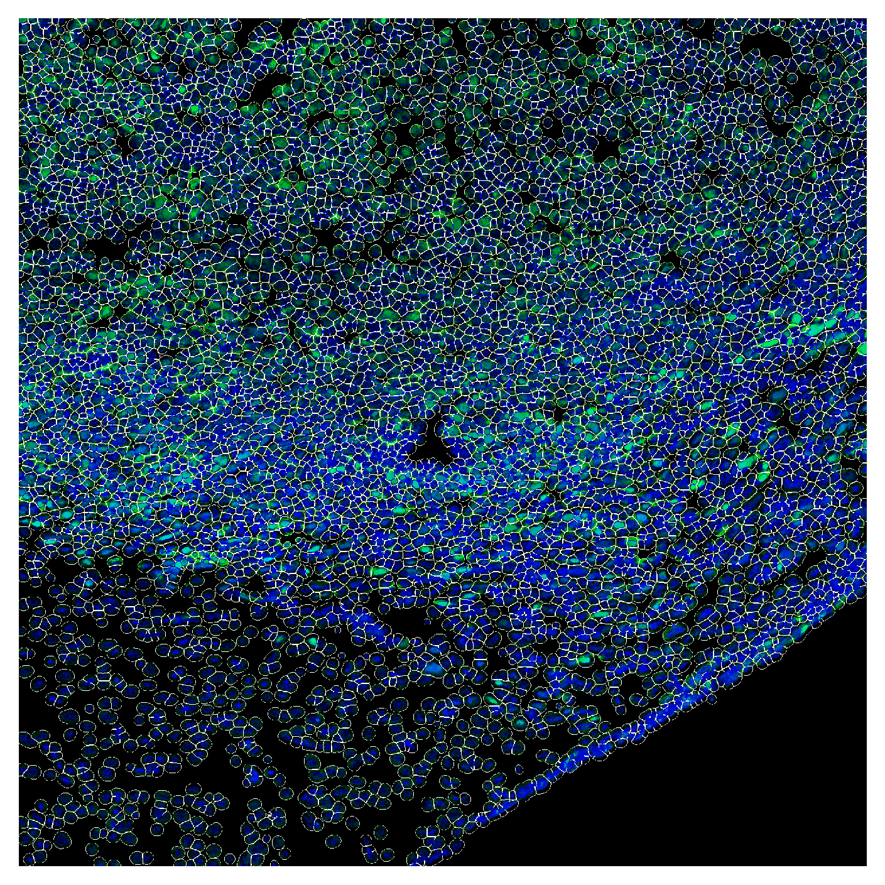
Analysis
mfi_df = compute_mfi(cell_mask=cell_labels,
channel1=image,
channel2=gfp_image)plt.figure(figsize=(8,6))
plt.hist(mfi_df['mfi_ch2'], bins=50, color='white', edgecolor='grey', density=True)
ax = plt.gca()
mfi_df['mfi_ch2'].plot(kind='kde', color='red', ax=ax)
plt.xlabel('Per-cell MFI')
plt.ylabel('Kernel Density Estimate')
plt.axvline(10000, color='red', linestyle='--')
plt.show()
# TO-DO: add a utility of identifying marker-positive cells based on a reference image (e.g. negative conrol) using a mixture model.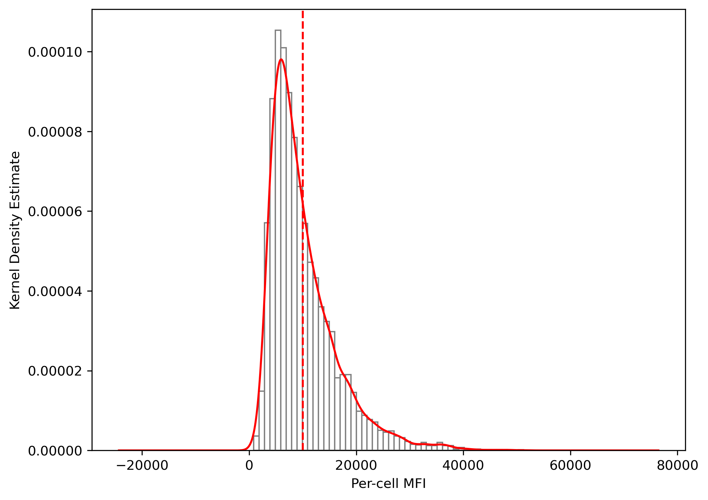
mfi_df["cell_type"] = np.select(
[mfi_df["mfi_ch2"] > 10000],
["Tumor"],
default="other")
plot_label_mask(cell_labels,
nuclear_mask=global_mask,
cell_type_map=mfi_df.set_index('label')['cell_type'].to_dict(),
default_color=(0,0,0),
outline_color="white",
type_colors={"Tumor": (0,1,0)})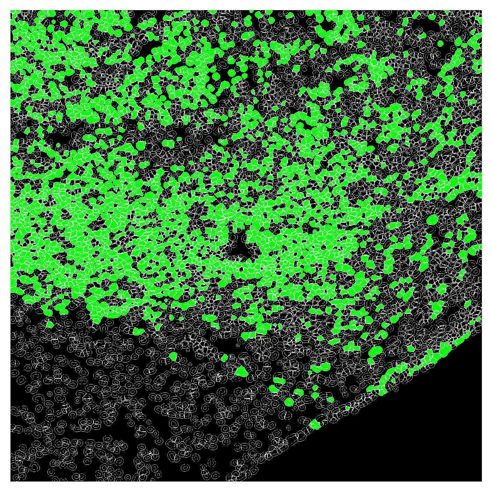
Unsupervised: K-means clustering
To determine the optimal number of clusters (\(k\)), we use the Elbow method, which involves plotting the sum of squared distances (inertia) to the the nearest cluster center for different values of \(k\). The “elbow” point in the plot indicates the optimal \(k\).
X = mfi_df[['mfi_ch1', 'mfi_ch2']].values
k_values = range(1, 20)
inertias = []
for k in k_values:
km = KMeans(n_clusters=k, random_state=0)
km.fit(X)
inertias.append(km.inertia_)
# Plot the “elbow” curve
plt.figure(figsize=(6, 3))
plt.plot(list(k_values), inertias, marker='o')
plt.xlabel('Number of clusters (k)')
plt.ylabel('Inertia')
plt.xticks(list(k_values))
plt.title('Elbow Method for Optimal k')
plt.show()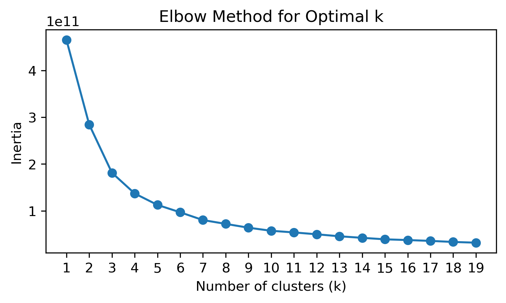
Based on the above plot, we choose \(k=4\) for clustering.
k = 4
kmeans = KMeans(n_clusters=k, random_state=0).fit(X)
mfi_df['kmeans_cluster'] = kmeans.labels_We can examine the counts of the cell labels we previously assigned to each cluster:
contingency = pd.crosstab(
mfi_df['cell_type'],
mfi_df['kmeans_cluster'],
rownames=['cell_type'],
colnames=['kmeans_cluster'],
margins=True
)
print(contingency)kmeans_cluster 0 1 2 3 All
cell_type
Tumor 69 481 483 1494 2527
other 3112 891 0 7 4010
All 3181 1372 483 1501 6537cluster_map = mfi_df.set_index('label')['kmeans_cluster'].to_dict()
plot_label_mask(cell_labels,
nuclear_mask=global_mask,
cell_type_map=cluster_map,
default_color=(0,0,0),
seed=18,
outline_color="white")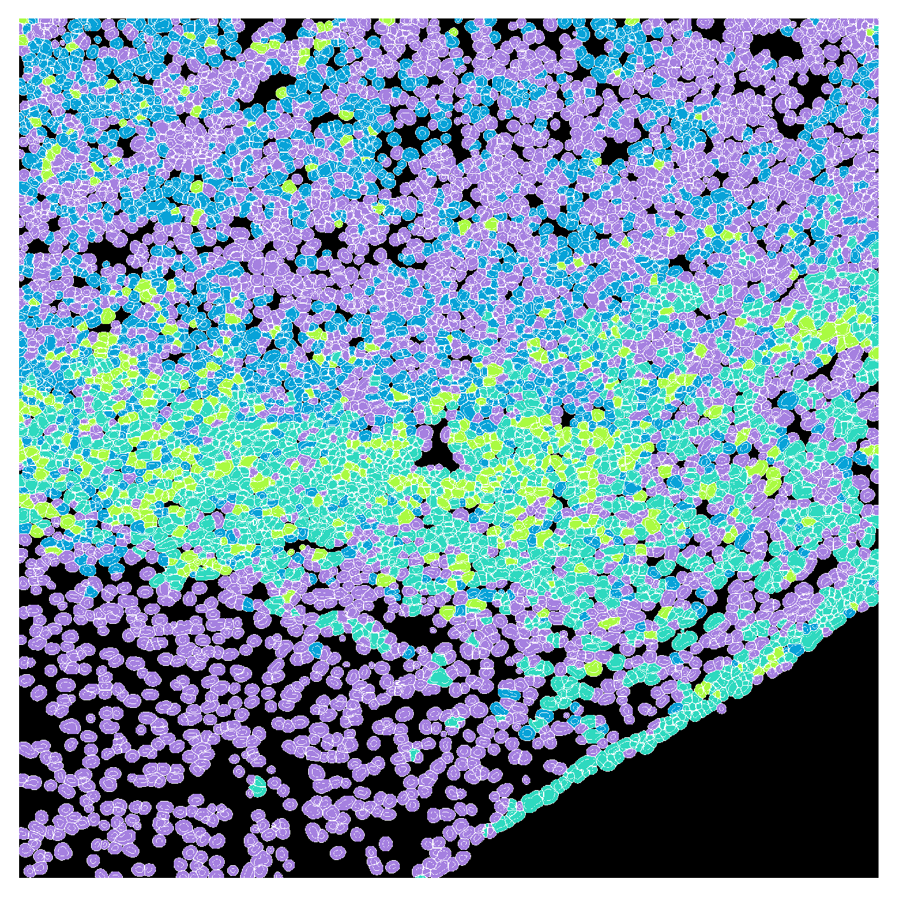
We can also examine the distribution of each feature across the clusters using violin plots:
plt.figure(figsize=(6, 3))
sns.violinplot(
x="kmeans_cluster",
y="mfi_ch1",
data=mfi_df,
hue="kmeans_cluster",
palette="muted",
legend=False
)
plt.xlabel("K-means Cluster")
plt.ylabel("GFP MFI")
plt.tight_layout()
plt.show()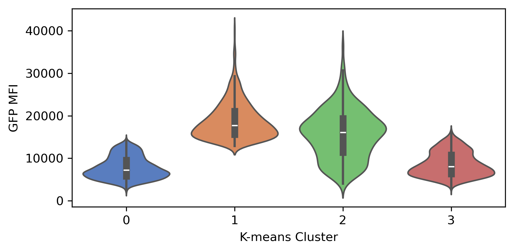
Example Workflow for H&E Images
Reading the Input Image
filename="../data/FixedFrozen_HE.png"
mask = np.load('../cache/FixedFrozen_MouseBrain_mask.npy')
ihc_rgb = cv2.imread(filename)[...,::-1]# Call the function and collect the channels
ihc_rgb, ihc_e, ihc_h, ihc_d = process_ihc_image(ihc_rgb)
# Plot the output channels
fig, axes = plt.subplots(3, 1, figsize=(7, 6), sharex=True, sharey=True)
ax = axes.ravel()
ax[0].imshow(ihc_rgb)
ax[0].set_title("Original image")
ax[1].imshow(ihc_h)
ax[1].set_title("Hematoxylin")
ax[2].imshow(ihc_e)
ax[2].set_title("Eosin")
for a in ax:
a.axis('off')
fig.tight_layout()
plt.show()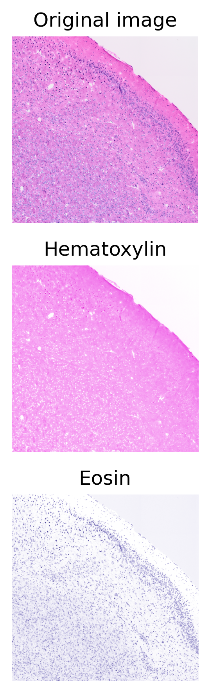
We will use the deconvolved eosin image for nuclear sementation. First, we convert the image to grayscale and invert it.
gray_image = cv2.cvtColor(ihc_e.astype(np.float32), cv2.COLOR_RGB2GRAY)
gray_image = np.abs(gray_image - 1)
gray_image = (gray_image * 255).astype(np.uint8)
plt.imshow(gray_image, cmap='gray')
plt.axis('off')
plt.show()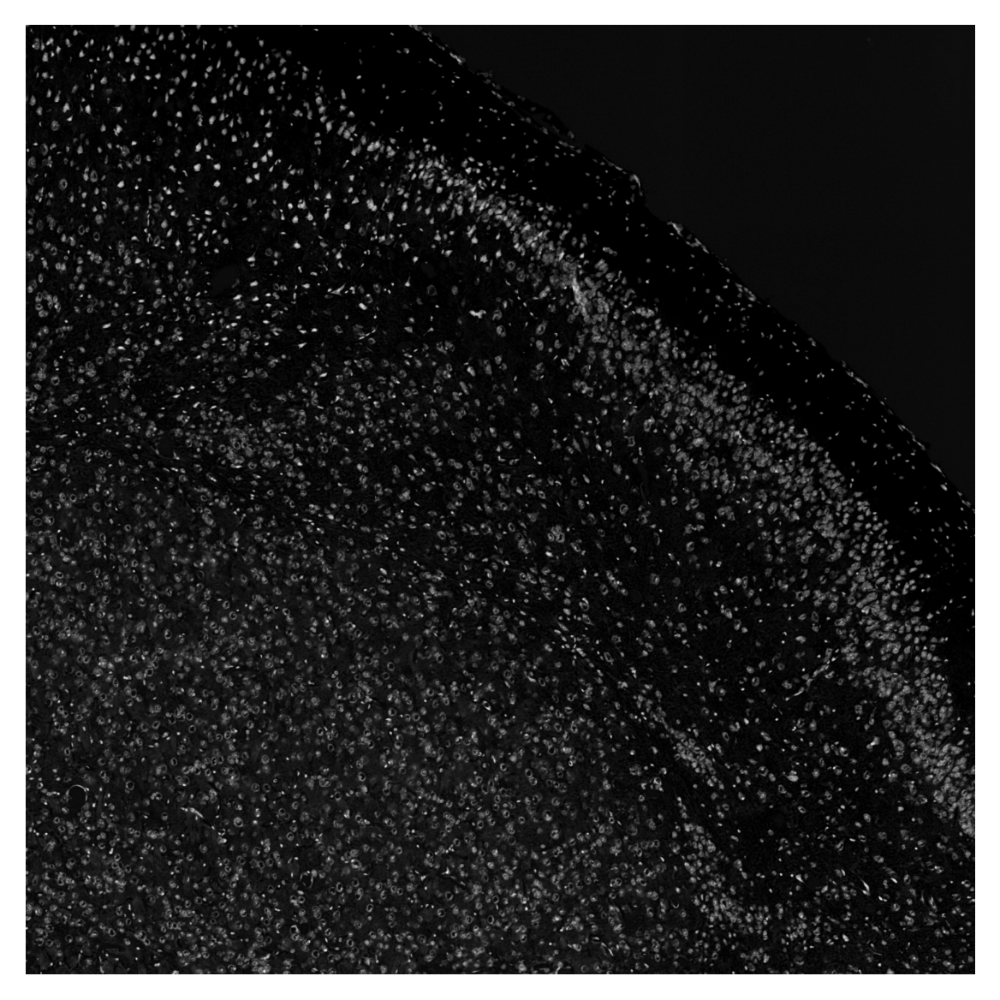
tiles, x, y = split(gray_image, tile_size = (128, 128), overlap = 20)
plt.imshow(tiles[20], cmap='gray')
plt.axis('off')
plt.show()
# save the tiles in case you need to train a custom model
# or determine optimal parameters
# save(tiles, "FixedFrozen_MouseBrain", x, y, "/Users/mzarodniuk/Documents/SAI/NEST_workdir/FixedFrozen_MouseBrain")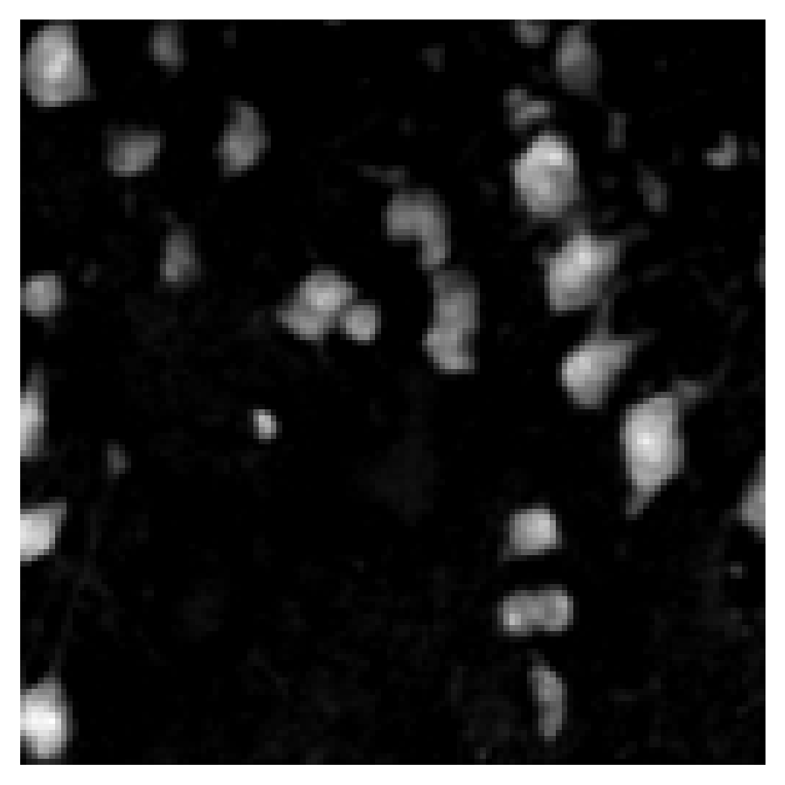
mask = predict(img_list=tiles, use_gpu=True, model_path=None, cellpose_param=(0.4, 0), diameters=10.0)
np.save('../cache/FixedFrozen_MouseBrain_mask.npy', mask)Using default Cellpose model for nuclei segmentation.no seeds found in get_masks_torch - no masks found.
no seeds found in get_masks_torch - no masks found.
no seeds found in get_masks_torch - no masks found.
no seeds found in get_masks_torch - no masks found.
no seeds found in get_masks_torch - no masks found.
no seeds found in get_masks_torch - no masks found.fig, axes = plt.subplots(1, 4, figsize=(16,4))
titles = ['Tile 1', 'Tile 2', 'Tile 3', 'Tile 4']
for ax, m, img, title in zip(axes, mask[20:24], tiles[20:24], titles):
overlay = plot_outlines(m, img)
ax.imshow(overlay)
ax.axis('off')
ax.set_title(title)
plt.tight_layout()
plt.show()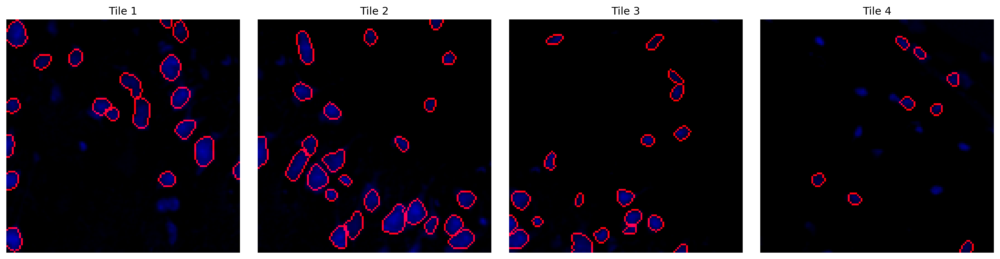
Stitching
global_mask = stitch(mask, x, y, 0.2)
nuclei_overlay = plot_outlines(global_mask, gray_image, save_path="../data/FixedFrozen_MouseBrain_nuclei_overlay.tif")
plt.imshow(nuclei_overlay)
plt.axis('off')
plt.show()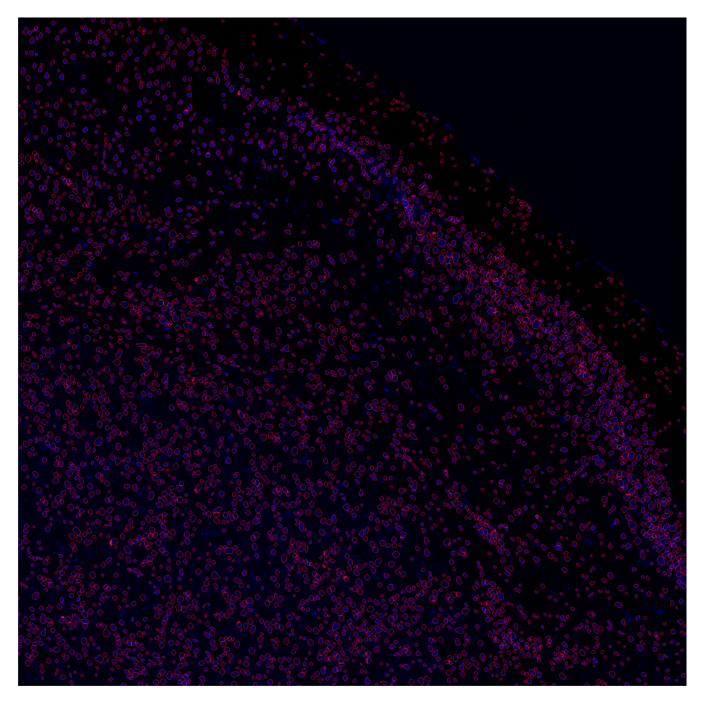